Разработка алгоритма, составление, отладка и выполнение программы с использованием итерационных циклов
Выполнить задания (см. ниже). Файлы с выполненными заданиями сохранять в личной папке в каталоге pr9. Имена файла (файлов) проекта должны содержать число 9.
Оформить в MS Word отчет о практической работе, включающий:
- тему работы
- цель работы
- задание 1
- условие задания 1
- блок-схему алгоритма задания 1
- листинг программы задания 1
- результат выполнения программы задания 1
- контрольные вопросы и ответы на них
- выводы по работе
Отчет распечатать и представить при защите ПР.
Задания
Задание 1. Изобразить блок-схему алгоритма и составить программу, вычисляющую в цикле с предусловием значение выражения: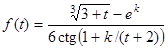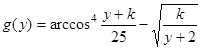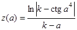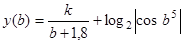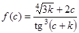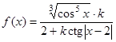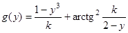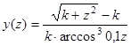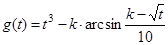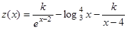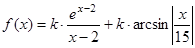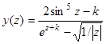
при каждом значении переменной 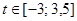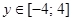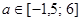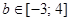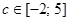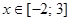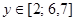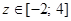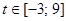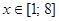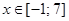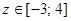 , изменяющейся с шагом 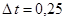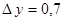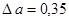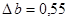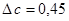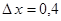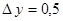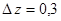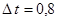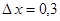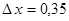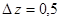.
Значения констант - произвольные. Учесть возможность возникновения исключений во время выполнения программы. Проект (или функцию проекта) сохранить с именем pr9_1
при каждом значении переменной , изменяющейся с шагом .
Значения констант - произвольные. Учесть возможность возникновения исключений во время выполнения программы. Проект (или функцию) сохранить с именем pr9_2
Задание 3. Изобразить блок-схему и составить программу, вычисляющую с помощью итерационного цикла сумму ряда:
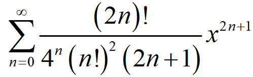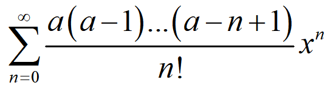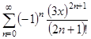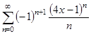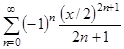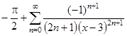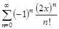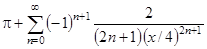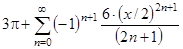 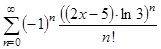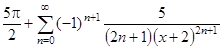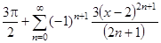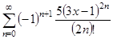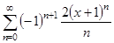
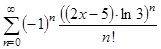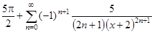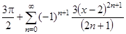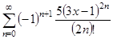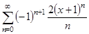
представляющего собой разложение функции

 в указанном интервале
в указанном интервале
 .
Точность вычисления (
.
Точность вычисления (eps) вводить с клавиатуры. Вывод результата в процессе отладки программы включает итоговую сумму и проверочное значение функции. Проект (или функцию) сохранить с именем pr9_3
Вы полностью закончили работу № 9? И показали выполненные задания 1-3 преподавателю?
Поздравляю! У Вас есть шанс успеть оформить работу прямо сейчас, а дома только распечатать. Приступайте!
Контрольные вопросы
- Понятие итерационных циклов
- Цикл с предусловием. Блок-схема и принцип действия
- Отличительные особенности цикла с предусловием
- Организация цикла с предусловием на С
- Прерывание циклов
- Цикл с постусловием. Блок-схема и принцип действия
- Отличительные особенности цикла с постусловием
- Организация цикла с постусловием на С